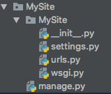

Django项目开发实战-博客
p个大s
这里用的是python3.7和Django2.0.假设全都安装成功= =
然后这个是我做个人网站的一个过程=。=
然后这个也不能算是个教程吧=。=
然后这只是粗糙的记录=。=
最后，防脱发用霸王=3=
生成一个完整的django项目¶
创建Django项目
1 | django-admin.py startproject MySite |
此时，你会看到这样的文件夹：

运行一下你的项目，看看有没有成功：
1 | ./manage.py runserver |
 有红字也不要担心，因为还没有设置呢！
接下来去
有红字也不要担心，因为还没有设置呢！
接下来去http://127.0.0.1:8000/看一看：
 成功了！
ps：如果想要外部机器（同一网络）访问本机的Django服务的话，要写成
成功了！
ps：如果想要外部机器（同一网络）访问本机的Django服务的话，要写成./manage.py runserver 0.0.0.0:9999,并将setting.py中的ALLOWED_HOSTS改为ALLOWED_HOSTS = ['*', ]，一定要加**逗号**！
- 改一些配置
ps：这里的顺序可能不对。= =
1. 更改/MySite/MySite/settings.py中的内容
Django默认的DATABASES是sqlite，是这样的：
 这里我是用的是
这里我是用的是MySQL数据库，因此，我要改成这样：
1 2 3 4 5 6 7 8 9 10 11 12 13 14 15 16 17 18 19 | ```python
DATABASES = {
'default': {
'ENGINE': 'django.db.backends.mysql',
'NAME': 'MySite',
'USER': 'xxx',
'PASSWORD': 'xxxxx',
'HOST': '127.0.0.1',
'PORT': '3306'
}
}
```
<font color='red'>这里一定要确保数据库已经存在了。</font>在这之前，需要创建数据库，像这样滴：
```
create database MySite CHARACTER SET utf8 COLLATE utf8_general_ci;
```
还要更改**时区**和**语言**
![image_1cjveevfspif39o6hm2mnucn3d.png-5.8kB][5]
|
-
向
/MySite/MySite/__init__.py中添加内容1 2
import pymysql pymysql.install_as_MySQLdb()
-
数据库迁移 首先，执行
然后，执行1
./manage.py makemigrations
这样就成功啦～1
./manage.py migrate

-
创建超级用户 创建超级用户是用来登陆到admin后台管理中的 执行
然后按照提示填写就好啦～ **ps：**一定要先进行数据库迁移，再创建用户。否则，会出现1
./manage.py createsuperuser

-
进入admin看看 在浏览器中输入
http://127.0.0.1:8000/admin，会出现登录页面，此时会发现全都变成中文了，说明之前的设置生效了。 接下来，就可以用刚刚创建的用户登陆了，查看后台数据了！
接下来，就可以用刚刚创建的用户登陆了，查看后台数据了！
项目正式开始¶
-
创建app 执行
./manage.py startapp Post,查看项目结构，如下：
完成上步操作后，需要在
/MySite/MySite/settings.py中将app添加进去： 接下来，需要在app文件夹下添加
接下来，需要在app文件夹下添加urls.py，用于路由映射： 在
在urls.py中这样写：
同时，在1 2 3 4 5
app_name = 'Post' # 这里是为了url反向解析用 urlpatterns = [ # 这里放映射的view ]
/MySite/MySite/urls.py中需要添加对Post.urls的映射：1 2 3 4 5 6 7
from django.contrib import admin from django.urls import path, include urlpatterns = [ path('admin/', admin.site.urls), path(r'', include('Post.urls')), ]
-
创建模型 在app下的
models.py创建自己的模型就可以啦~1 2 3 4 5 6 7 8 9 10 11 12 13 14 15 16 17 18 19 20 21 22
from django.db import models class Category(models.Model): """分类""" name = models.CharField(max_length=100) class Tag(models.Model): """标签""" name = models.CharField(max_length=100) class Post(models.Model): """文章""" title = models.CharField(max_length=100) body = models.TextField() created_time = models.DateTimeField() modified_time = models.DateTimeField() excerpt = models.CharField(max_length=200, blank=True) # 文章摘要，可为空 category = models.ForeignKey(Category, on_delete=True) # ForeignKey表示1对多（多个post对应1个category） tags = models.ManyToManyField(Tag, blank=True) views = models.PositiveIntegerField(default=0) # 阅读量
然后一定不要忘记再进行**数据库迁移**啊！！
-
前端模版 这里的前端模板使用的是模板之家的 链接?：http://www.cssmoban.com/tags.asp?n=html5
首先创建templates目录，结构如下：
 此时，需要在
此时，需要在setting.py中添加关于模板的配置：
接下来是static目录，结构如下：
 显而易见，这里放的是一些css、js文件等
显而易见，这里放的是一些css、js文件等 -
index视图 首先，在
Post/views.py中实现index方法：1 2 3 4 5 6 7
def index(request): """ 主页 :param request: :return: """ return render(request=request, template_name='Post/index.html')
request为请求对象;template_name为渲染的前端页面的路径字符串（相对templates目录）
然后，在Post/urls.py中进行路由映射：
python
urlpatterns = [
url(r'^$', views.index, name="index"),
]
注意：如果你主页的url是空，正则必须写成**^$**
最后，一定要要修改静态页面中引用的路径。
对于Django来说，可以使用static标签。
在页面开头引入{% load static %}，这个对应的配置信息是 并将页面中的路径改为
并将页面中的路径改为 ps：对于css或者js中的引用也不要忘了改！
ps：对于css或者js中的引用也不要忘了改！
运行一下。
 搞定！
搞定！
- 向前端渲染及分页
首先，更改
index()
然后修改1 2 3 4 5 6 7 8 9 10 11 12 13 14 15 16 17 18 19 20 21 22 23 24
from django.shortcuts import render from django.core.paginator import Paginator from .models import Post def index(request): """ 主页 :param request: :return: """ post = Post.objects.all() limit = 3 paginator = Paginator(post, limit) page = request.GET.get('page', 1) result = paginator.page(page) context = { "post_list": result, "page": page } return render(request=request, template_name='Post/index.html', context=context)
index.html
运行看一下
 搞定！
搞定！
-
更改index.html中的所有跳转链接 在这里，我用的是url的反向解析。这样可以减轻后期维护成本。因此，就需要在urls.py中添加如下信息：

 在html中修改成如下：
在html中修改成如下：

-
博客文章页面 别忘了改跳转链接！！！！ 文章详情页和主页大体结构是相似的，因此，这里使用了模版继承。 在基类模版里，使用这个，将子类模版需要填充的位置占位
 然后在子类模板中，使用相同的标签将填充的内容进行包裹
最后，不要忘了在子类模板中再写上
然后在子类模板中，使用相同的标签将填充的内容进行包裹
最后，不要忘了在子类模板中再写上{% extends 'Post/base.html' %}和{% load static %}在
Post/urls.py中添加详情页的url：
并添加detail视图1
url(r'^detail/post-(?P<pk>\d+)$', views.detail, name="detail"),
1 2 3 4 5 6 7
def detail(request, pk): """ :param request: :param pk: 接收到的文章的主键id :return: """ return render(request, template_name='Post/blog.html', )
运行看一下吧！
 搞定！
继续在视图中添加内容，将假数据改为真实的文章数据
对于多对多的关系来说，可以写成这样：
搞定！
继续在视图中添加内容，将假数据改为真实的文章数据
对于多对多的关系来说，可以写成这样：
 看一看效果吧！
看一看效果吧！

接下来就是让我可以上传markdown格式的文本了！ 这个暂时先不解决了= =，小本本记下来
-
添加分类栏 这里使用自定义模版标签！ 首先，在app文件夹下，创建
templatetags文件夹，然后创建一个py文件，里面定义模版标签，目录是这样滴：
然后定义一个分类目录的标签：
在前端引用自定义标签时，一定要开头加载自定义的模版标签所在的py文件，1 2 3 4 5 6 7 8 9 10 11 12
from django import template from ..models import Category register = template.Library() @register.simple_tag def get_categories(): """ 分类目录标签 :return: """ return Category.objects.all()
{% load simple_tags %},然后再使用：1 2 3 4
{% get_categories as category_list %} {% for category in category_list %} <li><a href="#">{{ category.name }}</a></li> {% endfor %}看一下效果吧！
 搞定！
搞定！ -
评论功能 评论功能新建一个app
不要忘了把它注册到django中1
./manage.py startapp comment

创建模型：
1 2 3 4 5 6 7 8 9 10
from django.db import models class Comment(models.Model): name = models.CharField(max_length=20) email = models.EmailField(max_length=50) website = models.URLField(blank=True) text = models.TextField() created_time = models.DateTimeField(auto_now_add=True) post = models.ForeignKey('Post.Post', on_delete=True) # 一篇文章有多个评论
不要忘了注册到admin中啊！
最重要的一步。数据库迁移啊！！！1
admin.site.register(Comment)
这里要实现的是点击submit按钮，会提交评论 在
comment/views.py中添加视图：1 2 3 4 5 6 7 8 9 10 11 12 13 14 15 16 17 18 19 20 21 22
from django.shortcuts import render, redirect from .models import Comment from Post.models import Post from django.urls import reverse def submit_comment(request, pk): """ 处理提交的评论 :param request: :return: """ post = request.POST comment = Comment() comment.name = post.get("name") comment.email = post.get('email') comment.website = post.get('website') comment.text = post.get('message') comment.post = Post.objects.get(id=pk) comment.save() return redirect(reverse('Post:detail', kwargs={"pk": pk}))
更改前端页面中的评论部分：

在
comment/urls.py中添加映射： 试一下吧！
试一下吧！
 搞定！
搞定！后面再完善一下。搞成可以回复的啵！小本本记下来～
-
最新评论 这个也写成自定义标签啵。
1 2 3 4 5 6 7 8
@register.simple_tag def get_latest_comment(): """ 获取最新评论 :return: """ comment_list = Comment.objects.all()[:5].only('post', 'text') # 只获取特定字段 return comment_list

看一下效果
 搞定！
搞定！ -
阅读量 在
Post/models.py中添加：
在
Post/views.py中添加：
在前端页面添加：

搞定！

好啦～到这里博客基本成型了。就是不好看= =。然后后面继续完善。小本本记下来。